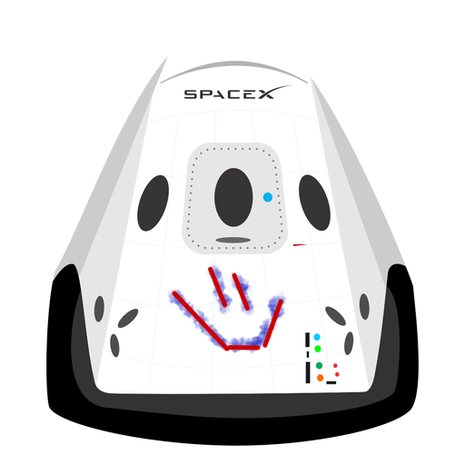

Hyperblog
Tu blog de cabecera
Aquí inicia la historia del spiderverse
Y este es esl párrafo del inicio donde vamos a explicar las cosas increíbles que se pueden hacer con ramas

Los blogs son lo mejor para compartir informacion y tus ideas.Mucho mas que ir a conferencias o salir en youtube.Excepto si eres un rockstar.Pero estadisticamente no lo eres... por ahora.
Susbribete y dale like.